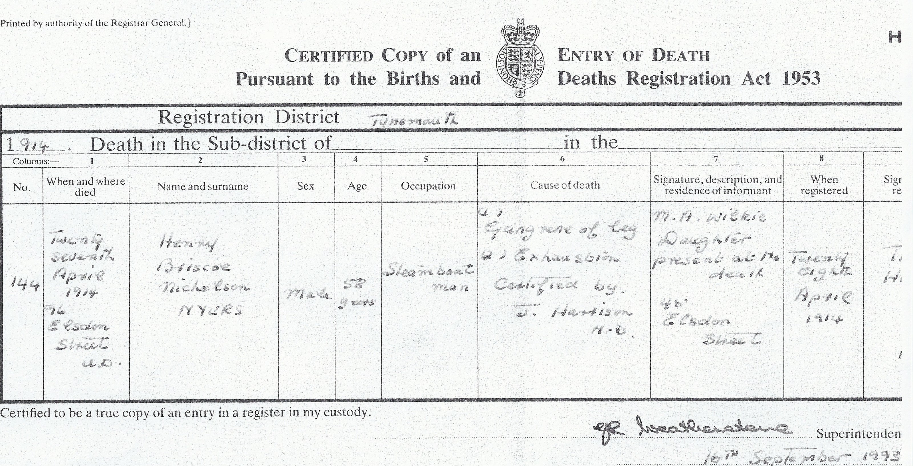
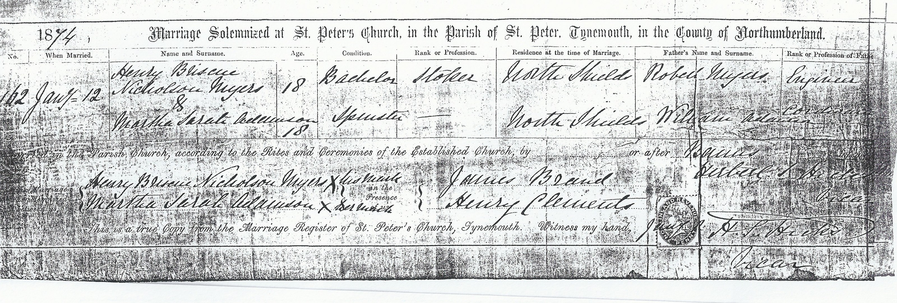

Henry Briscoe Nicholson Myers cFeb 1856 - 1914
[ Home ] | [ Calendar ] | [ Surnames Index ] | [ Errors ] | [ Family History ]A steamboat man and the child of Robert Myers (an engine man) and Mary Nicholson, Henry Myers was born in Morpeth, Northumberland, England c. Feb 18561,2,3,4,5 and married Martha Adamson (with whom he had 10 children: Robert, Mary Ann Nicholson, Thomasina B Nicholson, Martha Sarah Nicholson, Henrietta Briscoe Nicholson, Susanna Cranmer, Lavinia Clements, Christina Robertson, Wilhelmina White Ridley Adamson and Isabella Jane Nicholson, along with 1 surviving child) at St Peters Church, Tynemouth, Tyne and Wear, England on 12 Jan 18747.
During his life, he was living at North Street, North Shields, Tyne and Wear on 7 Apr 186111; at 2 South Street, North Shields, Tyne and Wear on 3 Apr 18819; at 16 Appleby Street, North Shields, Tyne and Wear on 5 Apr 18911 - less than a mile from his niece Martha Sarah Nicholson who was living at 16 Appleby Street, Chirton, Tyne and Wear; at 48 Appleby Street, North Shields, Tyne and Wear on 31 Mar 19018 - less than a mile from his niece Martha Sarah Nicholson who was living at 48 Appleby Street, Chirton, Tyne and Wear; and at 96 Elsdon Street in Tynemouth on 2 Apr 191110 - less than a mile from his niece Martha Sarah Nicholson who was living at 40 Burdon Main Row in Tynemouth, when he was living with his daughter Henrietta Briscoe Nicholson, following the death of his wife on 11 Mar 1910 which is where he died on 27 Apr 19146.
Parents
- Robert was born c. 1819
- Mary Ann was born on 24 Jul 1827
Children
- Robert was born c. May 1877
- Mary Ann Nicholson was born c. Feb 1879
- Thomasina B Nicholson was born on 30 Mar 1881
- Martha Sarah Nicholson was born on 27 Jun 1883
- Henrietta Briscoe Nicholson was born on 15 Aug 1885
- Lavinia Clements was born c. Nov 1887
- Christina Robertson was born c. May 1890
- Wilhelmina White Ridley Adamson was born c. Aug 1892
- Isabella Jane Nicholson was born on 21 Nov 1894
Citations
- 1891 England, Wales & Scotland Census - Findmypast (was age 35 and the head of the household)
- England & Wales births 1837-2006 - Findmypast
- Volume: 10B; Page: 130; Line Number: 15; Record set: England & Wales Births 1837-2006; Subcategory: Civil Births; Category: Birth, Marriage & Death (Parish Registers); Collections from: United Kingdom, England;
- Volume: 10B; Page: 265; Line number: 14; Record set: England & Wales Deaths 1837-2007; Subcategory: Civil Deaths & Burials; Category: Birth, Marriage & Death (Parish Registers); Collections from: United Kingdom, England;
- ngdom, England;
- England & Wales deaths 1837-2007 - Findmypast
- England & Wales Marriages 1837-2005 - Findmypast
- 1901 England, Wales & Scotland Census - Findmypast (was age 44 and the head of the household)
- 1881 England, Wales & Scotland Census - Findmypast (was age 26 and the head of the household)
- 1911 Census for England & Wales - Findmypast (was age 55 and the father in law of the head of the household)
- 1861 England, Wales & Scotland Census - Findmypast (was age 5 and the son of the head of the household)
Media
Henry Briscoe Nicholson Myers - death certificate

Henry Briscoe Nicholson Myers and Martha Sarah Adamson - Marriage Certificate

England & Wales deaths 1837-2007 Transcription - BMD-D-1914-2-AZ-000673-014
England & Wales births 1837-2006 - BMD/B/1856/1/LS/000450/015
England & Wales marriages 1837-2005 - BMD/M/1874/1/AZ/000168/184
England Marriages 1538-1973 - R_849486540
1901 England, Wales & Scotland Census - GBC/1901/0032858285
England & Wales births 1837-2006 - BMD/B/1856/4/HP/001003/002
1861 England, Wales & Scotland Census - GBC/1861/0019580316
1881 England, Wales & Scotland Census - GBC/1881/0023805814
Family Tree

Map
Generated by ged2site. Last updated on Jul 3, 2024
Known Issues
Can't find relationship with the home person
Census information missing between Census UK 1861 and Census UK 1881